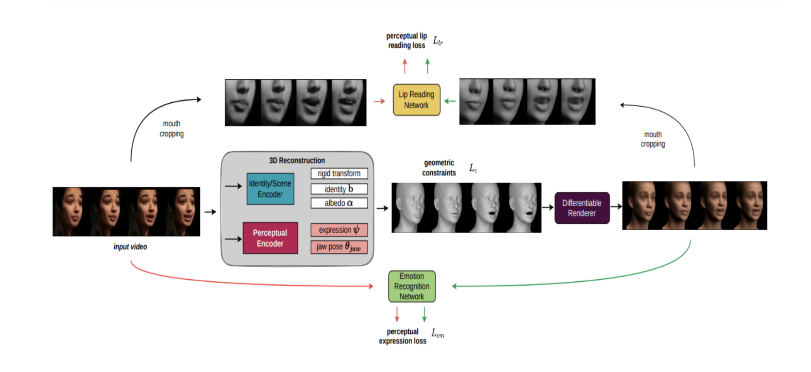
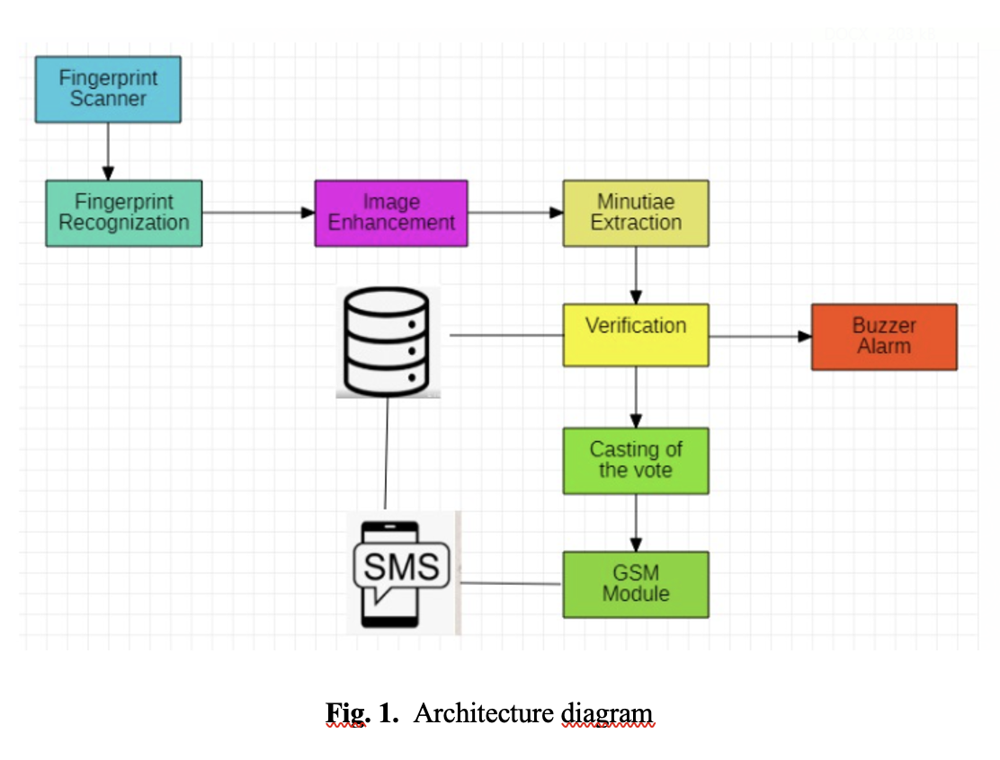
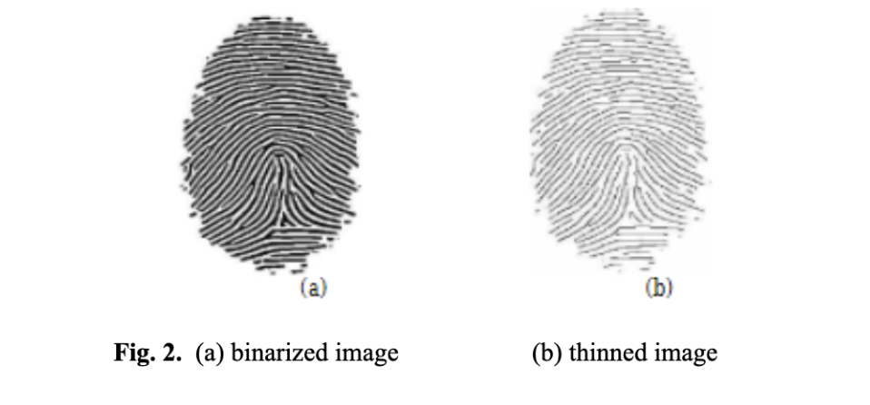
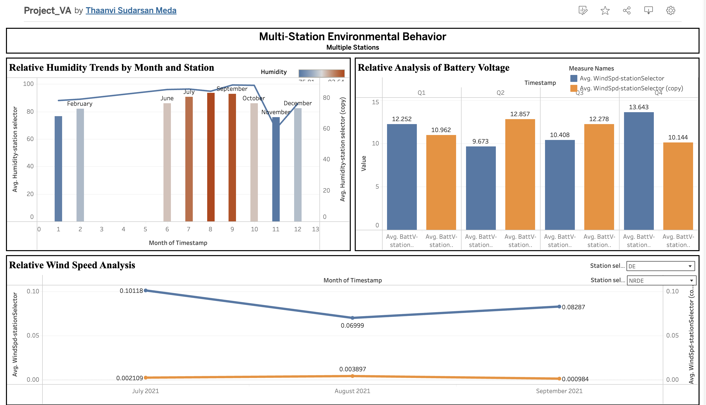
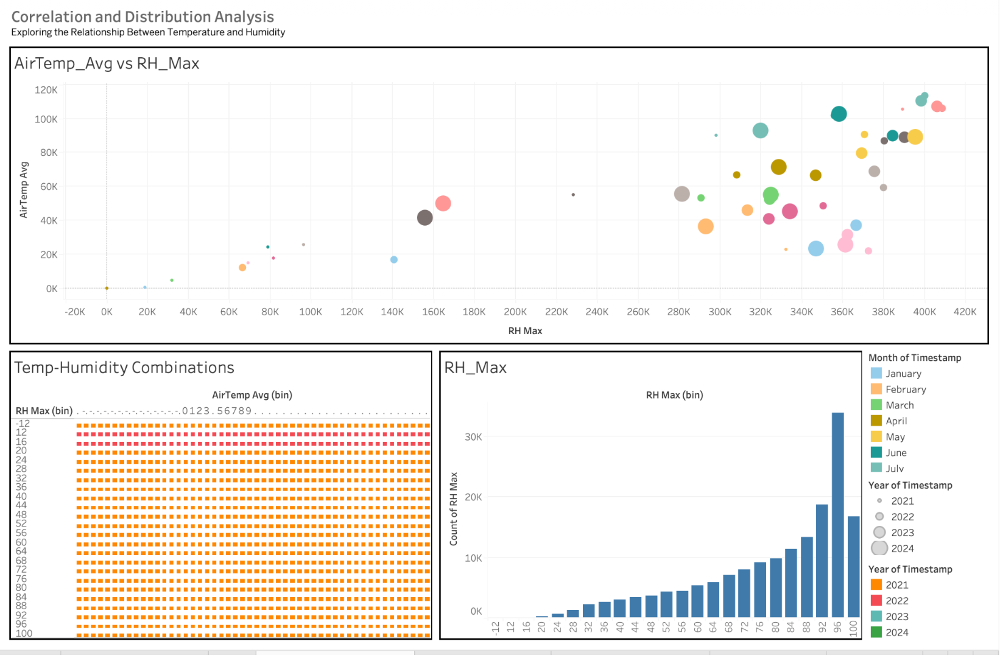
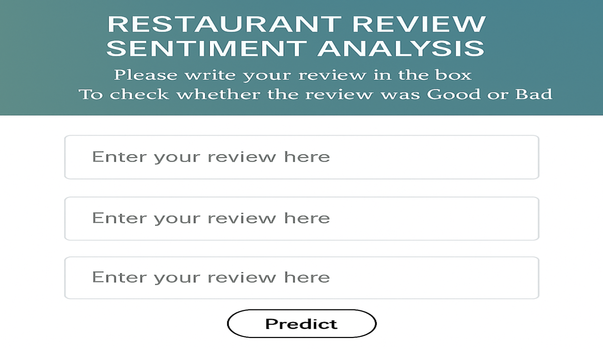
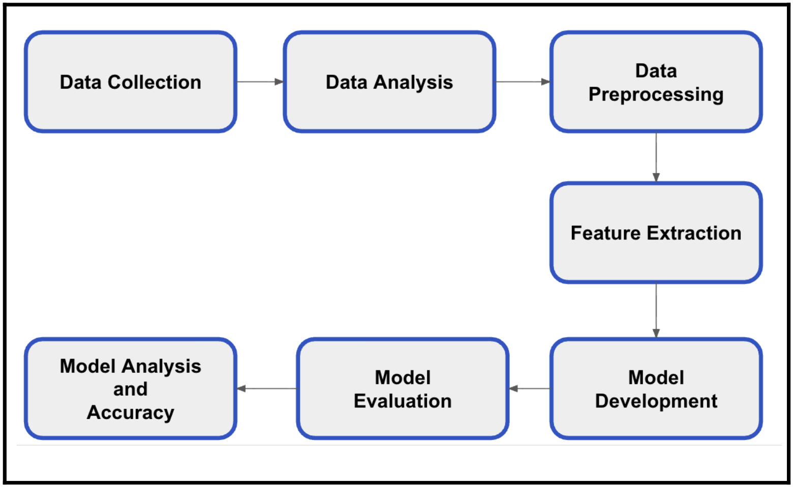
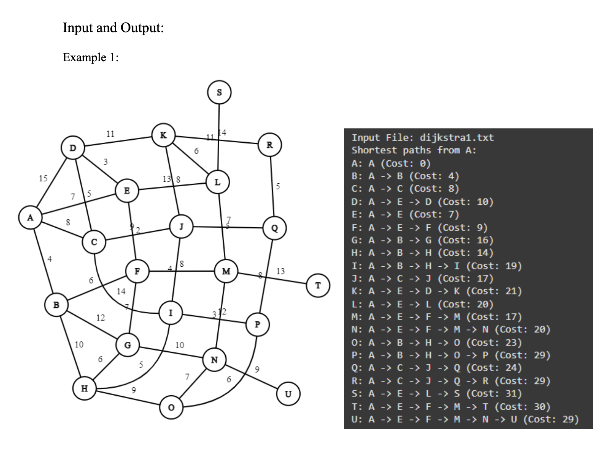
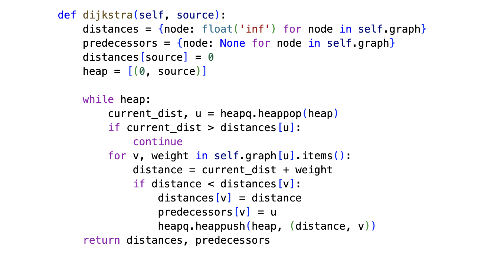

Visual Speech-Aware 3D Facial Reconstruction
Built speech-aware 3D facial reconstruction using SPECTRE/DECA backbone with MobileNetV2 and temporal convolution, trained on LRS3 dataset (118K+ synchronized audio-video clips). Deployed on AWS EC2 with Streamlit frontend.
Tech: Python, PyTorch, OpenCV, AWS, Streamlit

Smart Voting System (Published Research)
Developed a biometric fingerprint recognition system using Gabor filtering and Hamming distance-based minutiae matching. Published at ICICCT 2022, Springer. Demonstrates advanced image processing and security applications.
Tech: Python, OpenCV, Pandas, GSM Module


Multistation Environmental Behaviour Analysis
This project presents an interactive Tableau dashboard built to analyze and visualize key insights from the dataset.
Tech: Tableau, Tableau Prep Builder, Excel / CSV, Data Visualization, Dashboard Design


Restaurant Review Sentiment Analysis System
The user manual explains how to install, launch, and use a restaurant review sentiment system. It analyzes reviews, classifies them as positive, neutral, or negative, and presents the results on a user-friendly dashboard for managers, owners, and diners.
Tech: Python, NLP, Sentiment Analysis, Dashboard Design


Graph algorithms and related data structures
In this project three graph algorithms are implemented which include: Single-Source Shortest Path, Minimum Spanning Tree using Kruskal’s algorithm and Depth-First Search with topological sorting and cycle detection.
Tech: Python, Jupyter Notebook, Graph Algorithms, Dijkstra’s Algorithm, Kruskal’s Algorithm, DFS, Priority Queue, Union-Find

